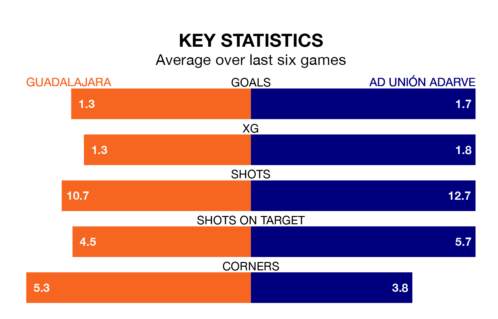

Sunday's early match between Guadalajara and AD Unión Adarve promises to be one for the neutrals, as two of Segunda División RFEF Group 5's most free-scoring sides go head-to-head.
Ahead of the game at the Estadio Pedro Escartín, Guadalajara and Unión Adarve sit joint-second in the goal-scoring charts, with 26 goals apiece.
Guadalajara are 13th in the table after 18 games, of which they have won seven and drawn two, earning 23 points.
Unión Adarve are four places ahead of the home side in ninth, with six wins and eight draws putting them on 26 points.
In the last three years, Guadalajara and Unión Adarve have played each other on three occasions. They won one each, and they drew once.
Their last meeting was on September 10, when they played out a 2-2 draw.
Guadalajara are in mixed form in Segunda División RFEF Group 5, with three wins and three losses from their last six games.
With two wins and two draws over that period, the visitors' form is slightly worse – they have taken eight points from 18, compared to Guadalajara's nine.
Guadalajara's last match was on January 14, a 2-1 loss against SS Reyes.
Unión Adarve beat CD Badajoz 3-1 last time out, also on January 14.
Updated: 14:53 (UTC), 16/01/24